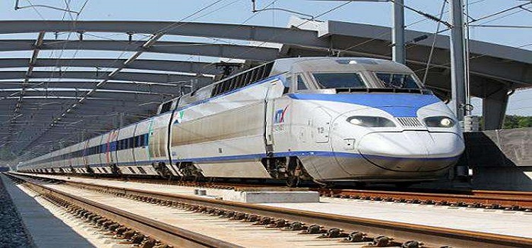

地铁
在韓國，搭乘地鐵遊玩各個主要觀光景點是最方便的交通手段，故從首爾到首都圈，以及釜山、大邱、光州、大田等地皆設有地鐵。現在首都圈的地鐵共分為1號線~9號線，另外還有新盆堂線、京春線、京義中央線、愛寶線、牛耳新設輕電鐵等電車路線。為了讓使用者能夠輕鬆區別，每條路線皆配有其代表色。
如欲查看详情资讯或地铁图，请浏览以下的网址
http://big5chinese.visitkorea.or.kr/
火车
首尔有3个主要的火车站：首尔火车站、龙山火车站和清凉里火车站。
韩国火车分为最特快[高速铁路（KTX）]、特快[新村（Saemaeul）号]、快车[无穷花（Mugunghwa）号]和Nuriro号四种。坐火车无需检票的，直接进站乘车，找到自己的座位对号入座。列车在行进过程中，会有乘务员巡回检票。
KTX高速列车票可在火车站的售票窗口、旅行社、邮局、自动售票机以及网上预订和购买。提前预订的话，最多能享受到20%的优惠；在自动售票机上购票也有1%的优惠；此外 选择自由座位票时优惠5%（仅限周一至周五）。

图片：铁路
公共巴士
首尔的公交车路线很清晰，分黄红蓝绿四种常见车型，黄色和蓝色是最常见的市内运行公交车。需注意的是，韩国的公交车上车刷卡后，下车也要刷一次卡。首尔的公交车站牌不像地铁站牌那样会有中文名称。首尔的公交网络很发达，不过如果你对首尔不熟的话，搭乘公交车可能会费神又费时间。强烈建议搭乘地铁。
首尔公交原则上前门上车，后门下车。10公里之内的单程票价在900韩元至2，300韩元不等，搭乘公交车的话最好买T-money交通卡。少数公交车会有英文报站，下车前按车厢内红色的下车按钮，并提前做好下车准备，如不迅速下车可能司机会关闭车门。

图：首尔的公共巴士
出租车
首尔出租车分普通和高级两种：高级出租车的车身为黑色，比普通出租车要贵，但是能提供更优质更舒适的服务。普通出租车呈银色和橙色。在首尔的主要街道都很容易叫到车。
普通出租车费用是根据路程和时间计算的。2km以内为起步价3000韩元，超过2km以后每142m加收100韩元。以低于时速15km的速度行驶时，每35秒加收100韩元。00：00-04：00之间乘车时需多支付20%的深夜附加费。
图：首尔出租车
#模范出租车#
模范出租车是黑色高级出租车，两侧车门上贴有“模范出租车”的标志。2km以内为起步价5000韩元，超过2km以后每164m加收200韩元。以低于时速15km的速度行驶时，每39秒加收200韩元。
提供发票，且不收深夜附加费。在酒店、火车站、巴士客运站，以及主要城市街道上都可以打到模范出租车，也可以打电话叫车。02-558-8000（韩、英、日）
#Tips#
大多数出租车都接受信用卡和T-Money卡，车顶有个V形的橙色标识。但是，司机一般比较喜欢现金支付，尤其是车程较短的时候。您可以向司机索要收据（Yeong-su-jeung）。
携带行李较多的旅客欲搭乘大型出租车（JUMBO TAXI）时，要注意与“CALL VAN货运车”区别开来。CALL VAN货运车与 JUMBO TAXI在外观上极为相似，但在收费上却大不相同，CALL VAN是按照所运货物的重量来收费的。其车主一般不遵守标准收费规章，而是通过与乘客间的口头协商来定价，最近欺负外国人不知情、乱收费的事例屡屡发生。因此在搭乘大型出租车时，请务必确认好是否有“JUMBO TAXI”标志后再乘坐。
如果乘客多于一位，行程也不长（比如地铁一两站的距离），打的要比公交和地铁便宜。
一般说来，出租司机不会讲英语或者其他外语，所以最好能把您的目的地用韩语写下来，交给司机看。最好带上一张您所在旅馆的名片，以防迷路。有些司机拒绝看地图，所以尽可能把目的地用韩语写下来。